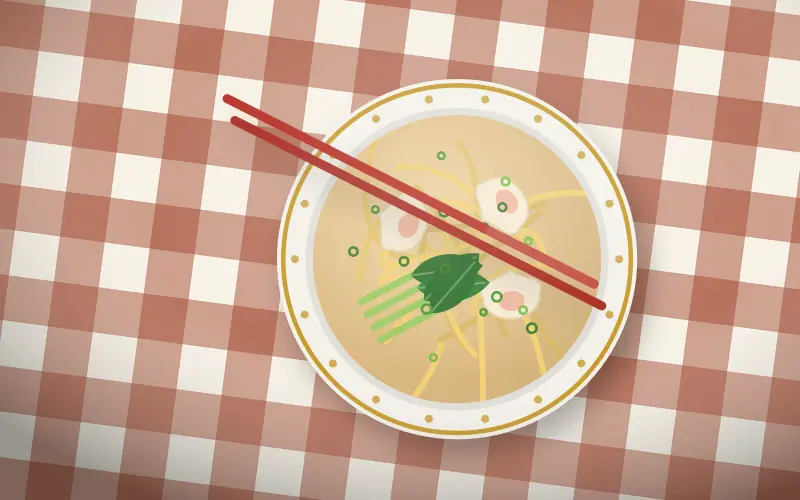
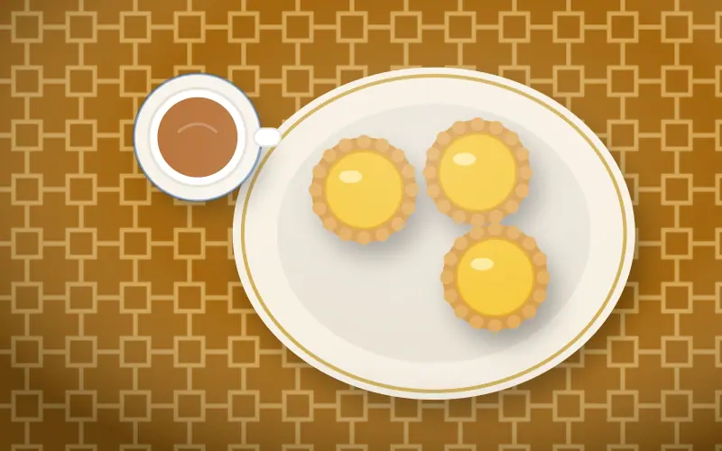
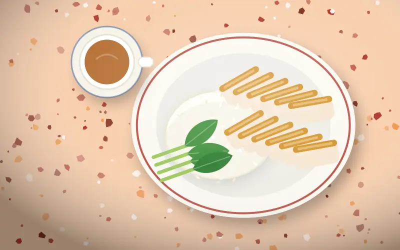
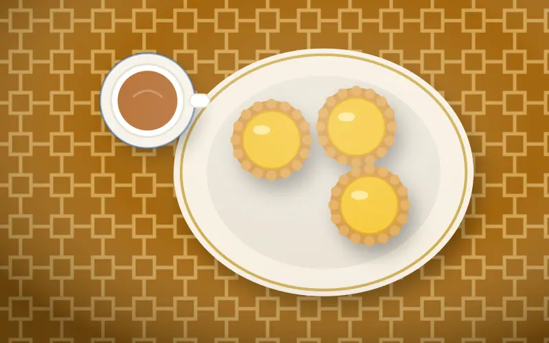
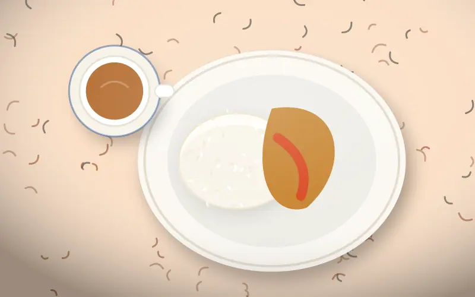

Cheap eats in Yuen Long 元朗區
9 places, from $24. Tap one for prices, hours and the nearest MTR.

Ho To Tai Noodle好到底麵家 · Yuen Long~$58 Hang Heung Cake Shop恒香老餅家 · Yuen Long$48
Hang Heung Cake Shop恒香老餅家 · Yuen Long$48 
Wing Wah Cake Shop榮華餅家 · Yuen Long~$24 Tai Wing Wah大榮華酒樓 · Yuen Long$88
Tai Wing Wah大榮華酒樓 · Yuen Long$88  Lau Fau Shan Seafood Street流浮山海鮮街 · Lau Fau Shan~$120
Lau Fau Shan Seafood Street流浮山海鮮街 · Lau Fau Shan~$120 Tam Jai Yunnan Mixian (Tin Shui Wai)譚仔雲南米線（天水圍） · Tin Shui Wai$56
Tam Jai Yunnan Mixian (Tin Shui Wai)譚仔雲南米線（天水圍） · Tin Shui Wai$56 
Tai Hing (Yuen Long)太興（元朗） · Yuen Long$78
Saint Honoré (Yuen Long)聖安娜餅屋（元朗） · Yuen Long~$24
Café de Coral (Tin Shui Wai)大家樂（天水圍） · Tin Shui Wai$52